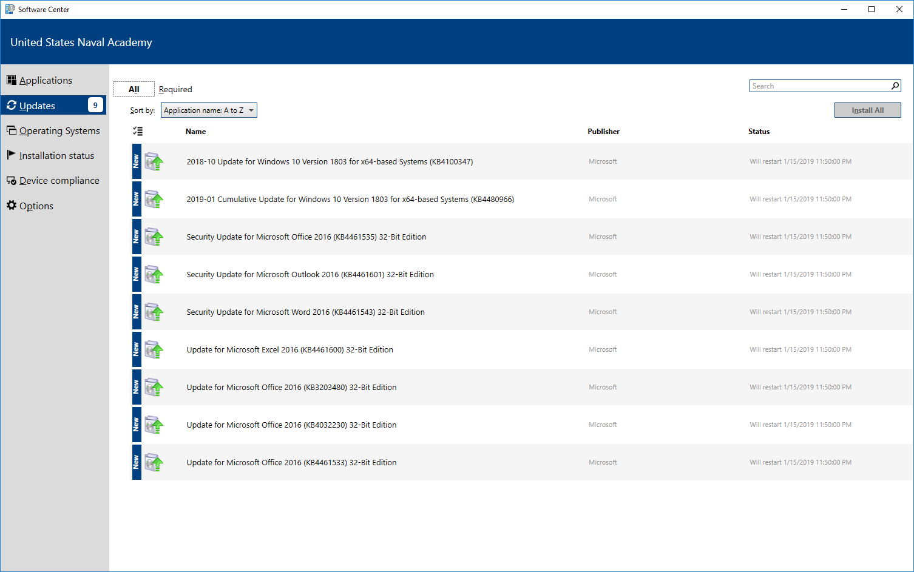
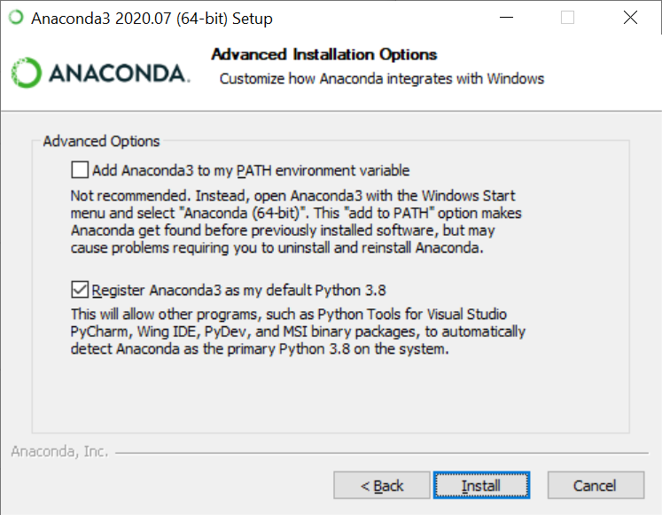
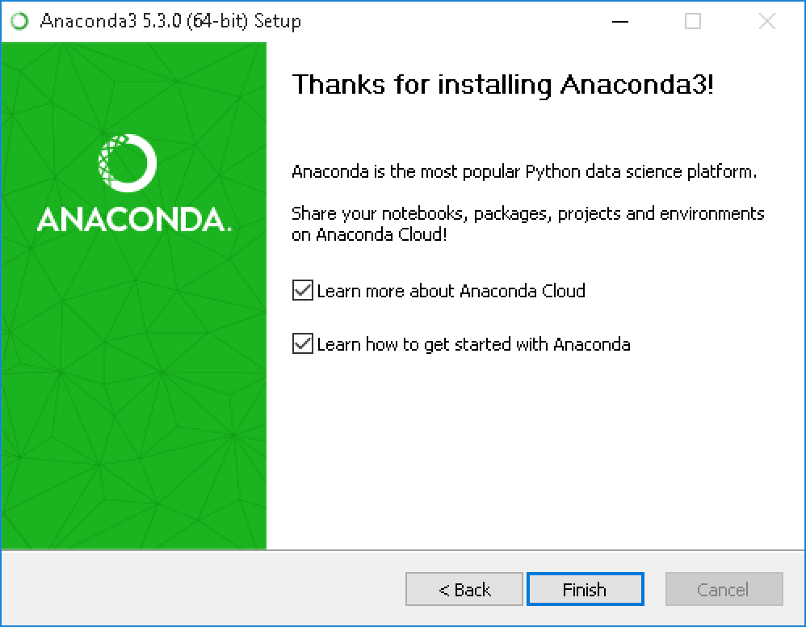
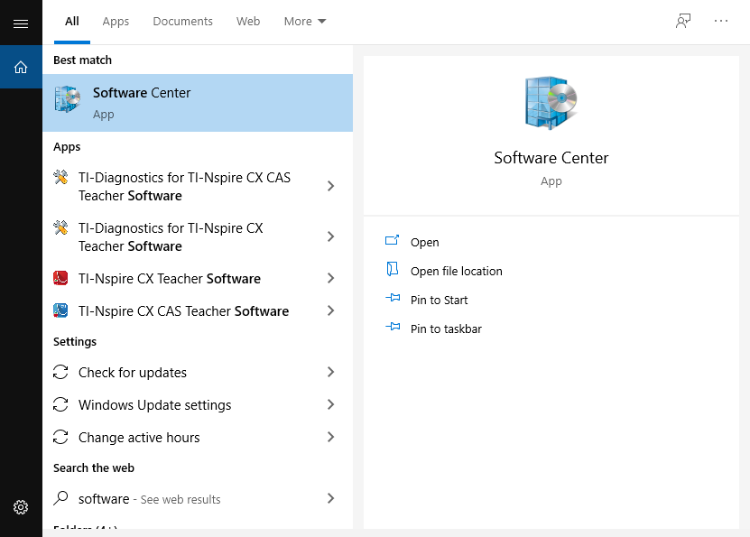
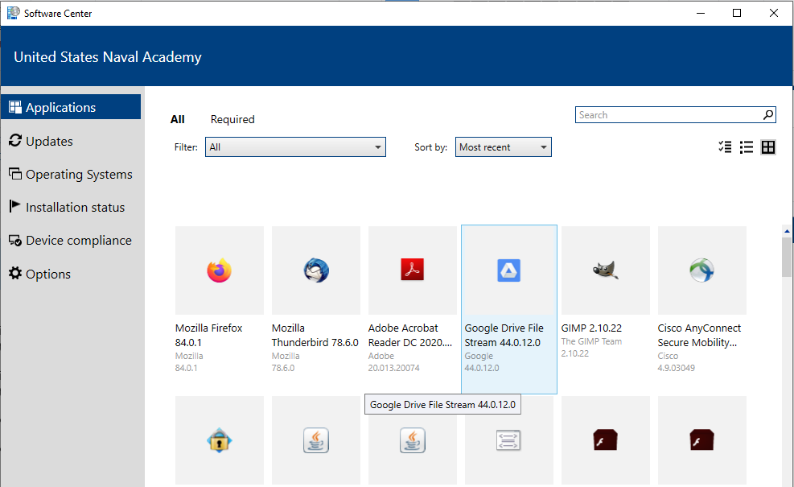
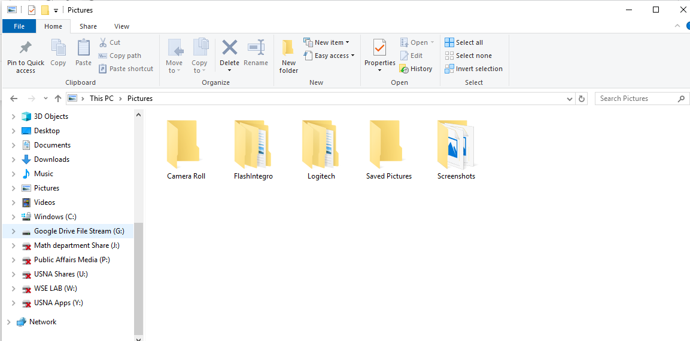

1. Python Installation Instructions¶
1.1. 1. Why Python¶
If you Google “most popular coding languages’’ or “which programming language is best for getting a job’’, you will see that Python is near the top of the list. In addition, Python has become the language of choice for AI, machine learning, and data science. We won’t be doing intense computer programming; if you are interested in programming in Python, you should take SI286: Programming for Everyone next semester. We’ll mostly be using Python for data manipulation and analysis. In order to begin working with Python, we need to install the required software.
1.2. 2. Getting Your Computer Ready for Installation¶
In order to minimize the potential for issues when installing the required Python software, please go to the USNA Software Center to make sure your computer is current with respect to required software updates (Software Center has been having problems lately, and if this is your situation, just skip to the next section.) To get to the Software Center, first click on the Windows icon on the bottom left corner of your PC screen. Then type software. That should bring up a link to the software center program at USNA. Click on the Software Center link. Once Software Center is open, go to the Updates tab and click Install All at the top right corner (see the image below) to install all required updates. Once the updates have finished, restart your computer.
{kind=link}
1.3. 3. Installing Anaconda¶
In this course, we will use Anaconda3 as the default Python distribution. Follow these instructions carefully. The instructions that follow are based on the documentation found on the Anaconda website.
Step 1. Download the Anaconda installer
Go to the installer webpage. Click on the big blue Download button, which should take you to the bottom of the page. Then select the 64 bit Graphical Installer for Python 3.8 (on a Windows Machine).
Step 2. Double click on the installer to launch
Step 3. Click Next
Step 4. Read the licensing terms and click “I agree”
Step 5. Select an install for “Just Me” and click Next
Step 6. Use the default destination folder to install Anaconda by clicking Next
For Steps 7, 8, and 9, refer to the image below.
{kind=link}
Step 7. Choose to NOT add Anaconda to your system PATH environment variable (i.e. leave the first box unchecked).
Adding Anaconda to the PATH environment variable can interfere with other software. We will use the Anaconda software by opening Anaconda Navigator or the Anaconda Prompt from the Start Menu.
Step 8. Register Anaconda as your default Python (i.e. leave the second box checked).
Step 9. Click the Install button.
Step 10. Click Next
Step 11. Click Skip if it asks you to install PyCharm or just click Next if it doesn’t ask you to install any additional software.
Step 12. After a successful installation you will see the “Thanks for installing Anaconda’’ dialog box shown below.
{kind=link}
Step 13. Uncheck the two boxes and click Finish to complete the installation.
Step 14. Check that everything installed correctly.
Click on the windows icon on the bottom left of your screen and scroll down to the apps starting with the letter A. You should see one called Anaconda3 (64-bit). If so, you can move on to the next section! If not, check that you followed all the instructions above; otherwise contact your instructor for assistance.
1.4. 4. Installing Google Drive File Stream¶
This is not strictly required for the course, but all midshipmen should install Google Drive File Stream since it helps you recover if your computer gets a virus. Last semester over a dozen midshipmen had computer problems that Google Drive File Stream could have mitigated. Google Drive File Stream is a way to store data locally on your computer and back it up in the cloud on Google’s servers. If your computer dies, you can easily restore all the files on Google’s servers back on your new laptop.
We’ll use Software Center to install Google Drive.
Step 1. First, left click on the windows icon at the bottom left of your computer screen (it looks like a set of four window panes and is to the left of the magnifying glass). Then start typing Software Center. Very quickly you should see the following window. Stop and left click on the Software Center app.
{kind=link}
Step 2. In Software Center, ensure that you are on the Applications tab (on the left) and locate Google Drive File Stream, as in the picture below. Left click on the icon.
{kind=link}
Step 3. Hit Install and accept any options.
You should now have a working installation of Google Drive File Stream. You can check that the installation worked by clicking on the yellow folder at the bottom of your screen (to open up the file explorer) and seeing a new option for a place to store files, drive G: on my computer.
{kind=link}
In order for us to use Google Drive File Stream with Python, we need to link the two systems so they can see each other. This is super-technical but fortunately it is fairly easy.
Step 4. Click on the windows icon on the bottom left of your screen. Type cmd and select the Command Prompt app.
A black window should open on your computer. You should have a prompt C:\Users\m123456> where your alpha number replaces m123456.
Step 5. Type the following code (replacing 123456 with your alpha number) into the black window and press enter.
mklink /J “C:\Users\m123456\DFS_Link_Jupyter” “G:\My Drive”
Step 6. Press x in the top right of the black box to close the application.
Congratulations! Your are ready to start class!